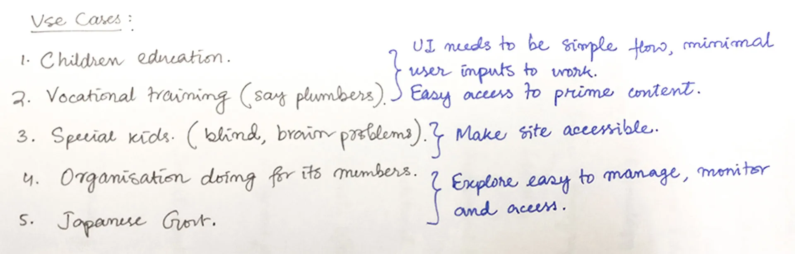
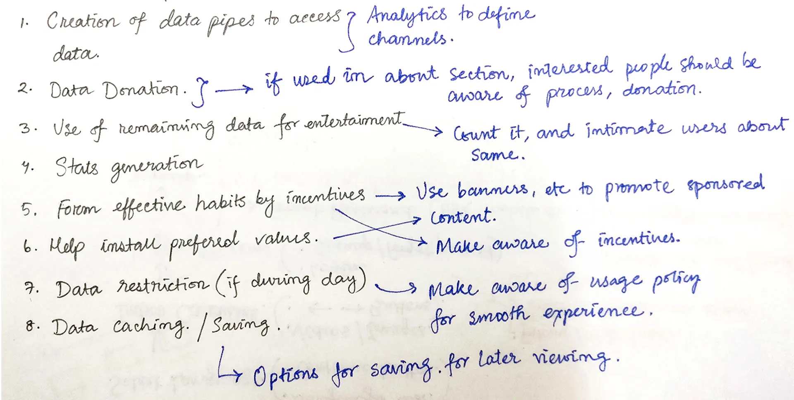
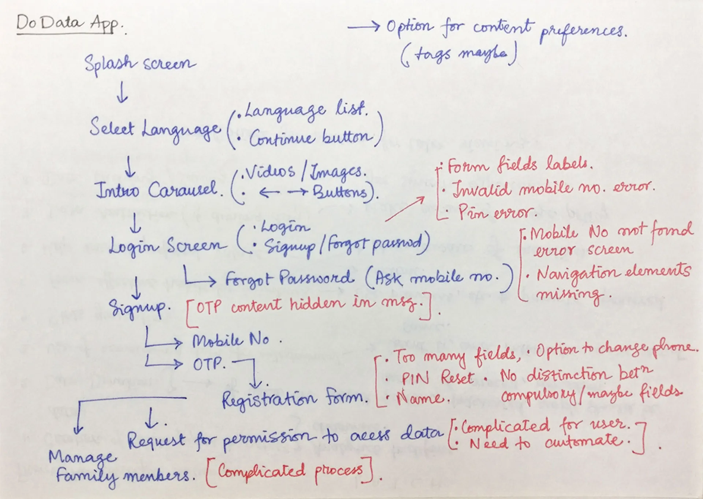
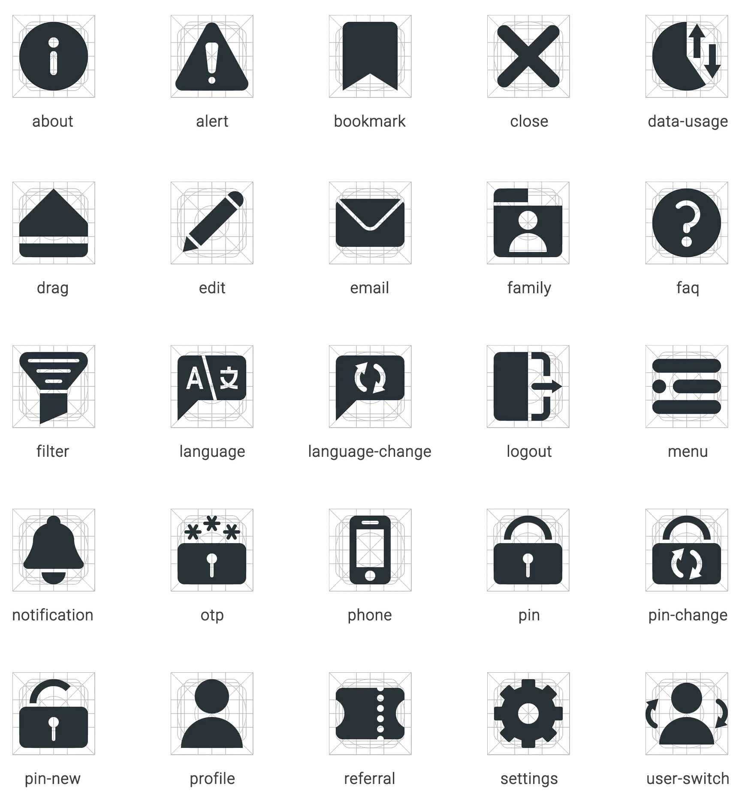

DoData
Even though excellent nuggets of knowledge are freely available on the internet, many individuals, especially the underprivileged, do not have access to it. To address the situation, DoData was envisaged — as a not-for-profit organization, whose main objective is to enable the donation of data (internet) for the needy. I worked on the User Interface Design of the mobile app for DoData during my internship at Rupeelog in the summer of 2017.
The Problem
With the penetration of technology in our lives, people today have a plethora of services at their fingertips (literally!). For 2017, the number of smartphone users in India is estimated to cross 300 million. This can give access to a huge collection of knowledge available online via smartphones. However, it was found that despite the availability of the devices and the desire to learn, many of the individuals were unable to utilize the resources for learning.
What was needed was a channel that could bridge the following hurdles —


The Solution
Data Donation — The act of donating data to an individual or a family to enable them to access the world of online knowledge using their smartphones.
Here, ‘data’ refers to the data pack that will provide internet connectivity to the user to bridge the digital divide. This, however, solves only the first half of the challenge.
To ensure the appropriate usage of this data for intended purposes, there needed to be a system that could act as the interface for the curated content and allow monitoring of the data consumption to ensure judicious use of the donated data. It is part of an NGO effort aimed at making informative content consumption via mobile affordable for the masses. And that interface for the end user is what I got a chance to work on!
Understanding the user and app usage
The app is aimed at helping users consume informative content via mobile data in their native language. It would also capture and report data usage for the DoData app and other indicated apps to ensure effective use of the donated data.

The content to be served is curated by different NGOs for their users. The users can have content from multiple sources — NGOs and third parties. They may be kids trying to learn science or grown-ups trying to pick up a new skill for work.
Before proceeding with the app, I had to work on the branding… It is really fun sketching shapes and choosing colours, not to mention deciding on a typeface!
Creating a logo
I associated keywords with the project and began sketching out ideas that involved WiFi, the internet, people and of course the cursive ‘D’.
The idea was to integrate the gesture of giving with care with the symbol for the internet and the letter ‘D’. I tried to use mostly geometric shapes to ensure pixel-perfection on screens.
The folks at Rupeelog decided to go with the bottom right shape. It is simple and conveys the message.

Choosing colours
I wanted colours that could express growth, prosperity and happiness along with the intellectual aspect of the app. So, I decided to experiment with green, yellow, and blue which could express the above attributes as explained by Timothy Samara in his book.

I finally settled with two hues of green — one with yellow and one with blue, using which I developed the colour palette for the app.
Choosing typefaces
Now that the logo symbol was finalized, I had to work on finding a suitable typeface that can together make up the logotype.

I settled with Bree-Serif for the logotype because of its cheerful and friendly appearance. For the app content, I chose Noto Sans because it can support a multilingual app with its wide coverage of over 30 scripts.


Designing the UI for the consumer app
The backend of the service was already under development when I began the project. So, the basic app flow had already been decided by the project manager which had been conveyed to me via rough sketches. After I had analysed the wireframes, I suggested a few modifications, which were then incorporated into the final UI. I used Sketch to make the screens and created a prototype using Invision App which helped in the smooth hand-off of UI specs and assets.


I wanted to keep the UI as close to a standard Android app so that it is intuitive to users familiar with an Android phone. Also, to avoid leaving the users in a state of anguish, it was important to consider edge cases to handle error scenarios efficiently.


The dashboard contains the content categorized by the sources, specific to the current user. If a single account is used by an entire family, the account admin can add family members, and they can access their content by simply switching the user from the menu.

The card-grid layout is preferred here as it gives an overview of content categories, without the user having to scroll much. This has an advantage over accordion lists when the number of items is large.

The banner acts as placeholder for advertisements and promotional content from the Government or other sources. It can help instil preferred values (like Nationalism, Cleanliness) in the consumer.
The app can help form effective habits by incentives (in terms of data and other things) and by alerts and reminders, accessible from the notifications section.
Keeping track of data usage is just a swipe away. It can help users use their bandwidth efficiently — balancing between education and entertainment.

Designing the icons
Even though many of them are standard icons, I recreated them in Adobe Illustrator using the Material Design Grid to fit the solid visual family.

…and then the developers developed. An early version of the App is available on android devices.